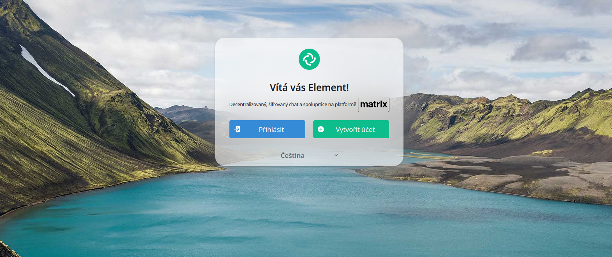
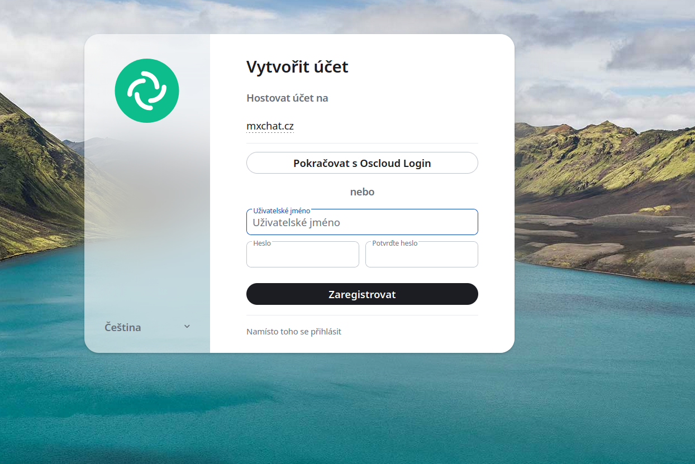
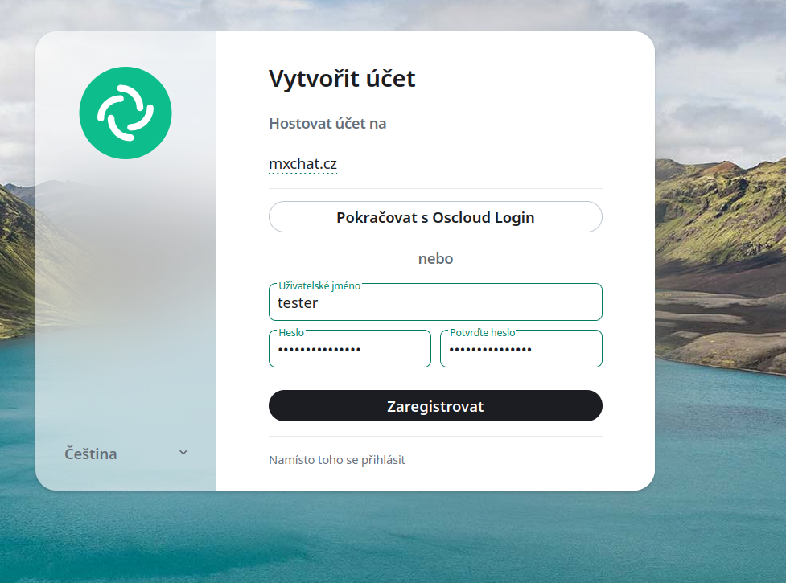
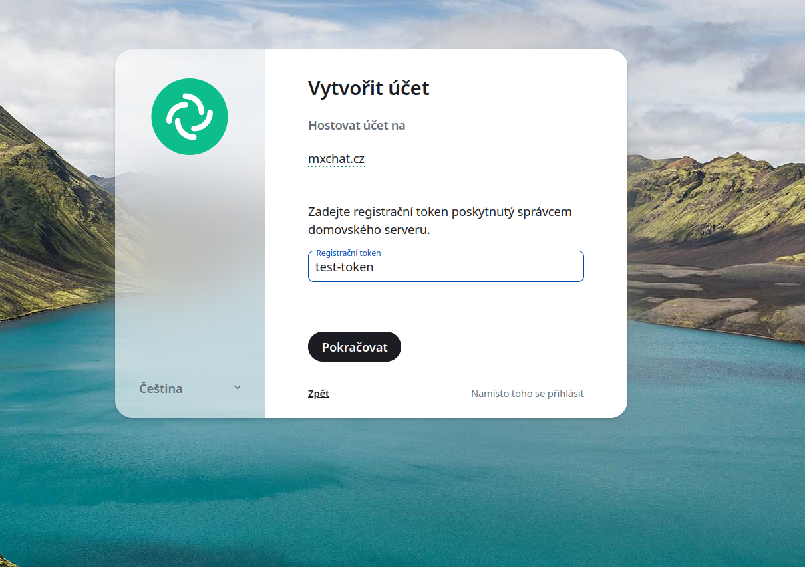
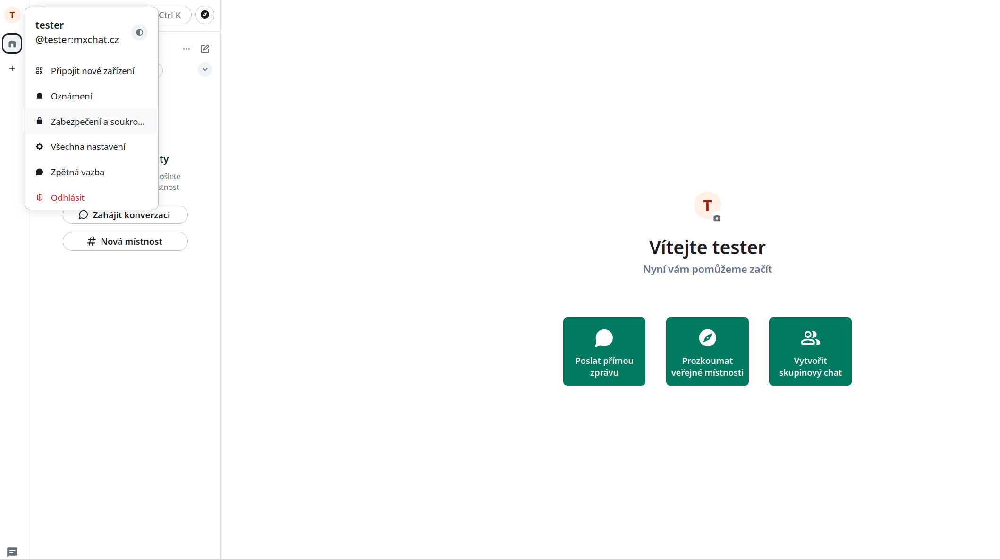
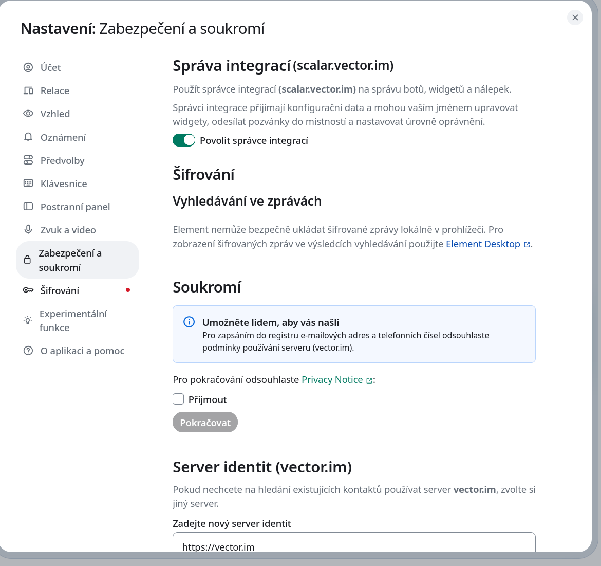
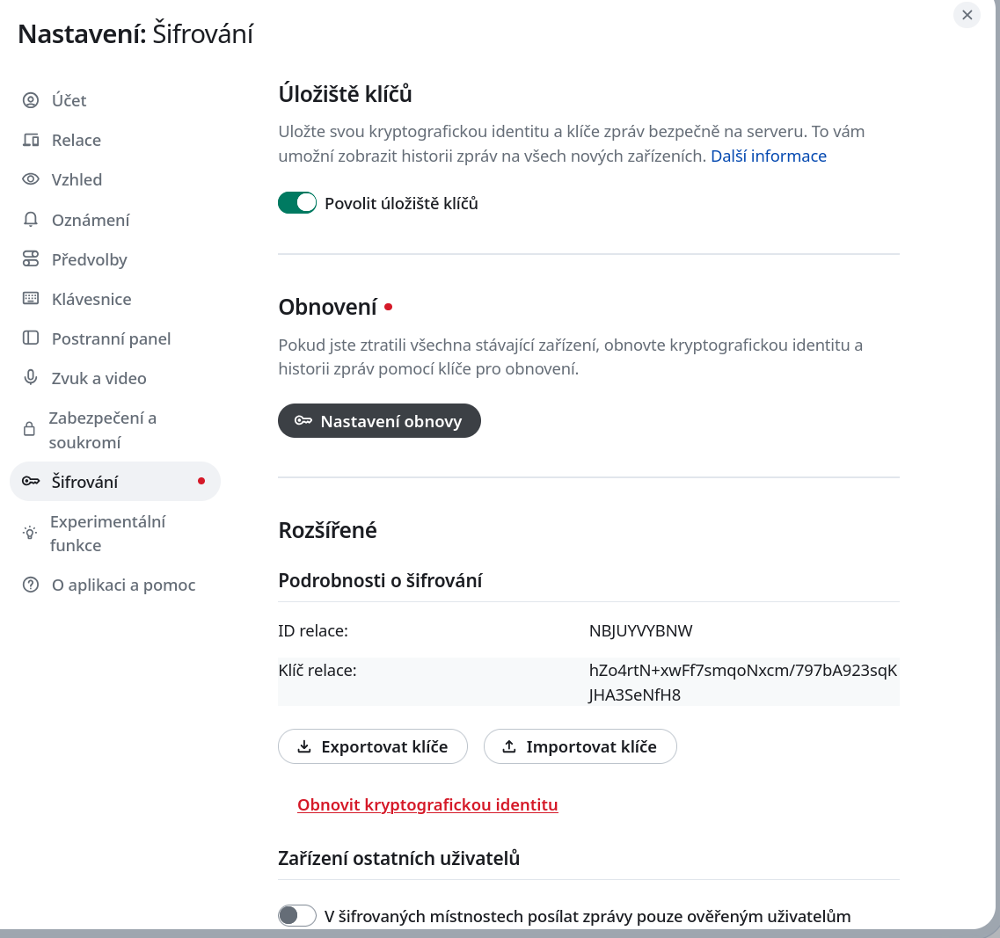
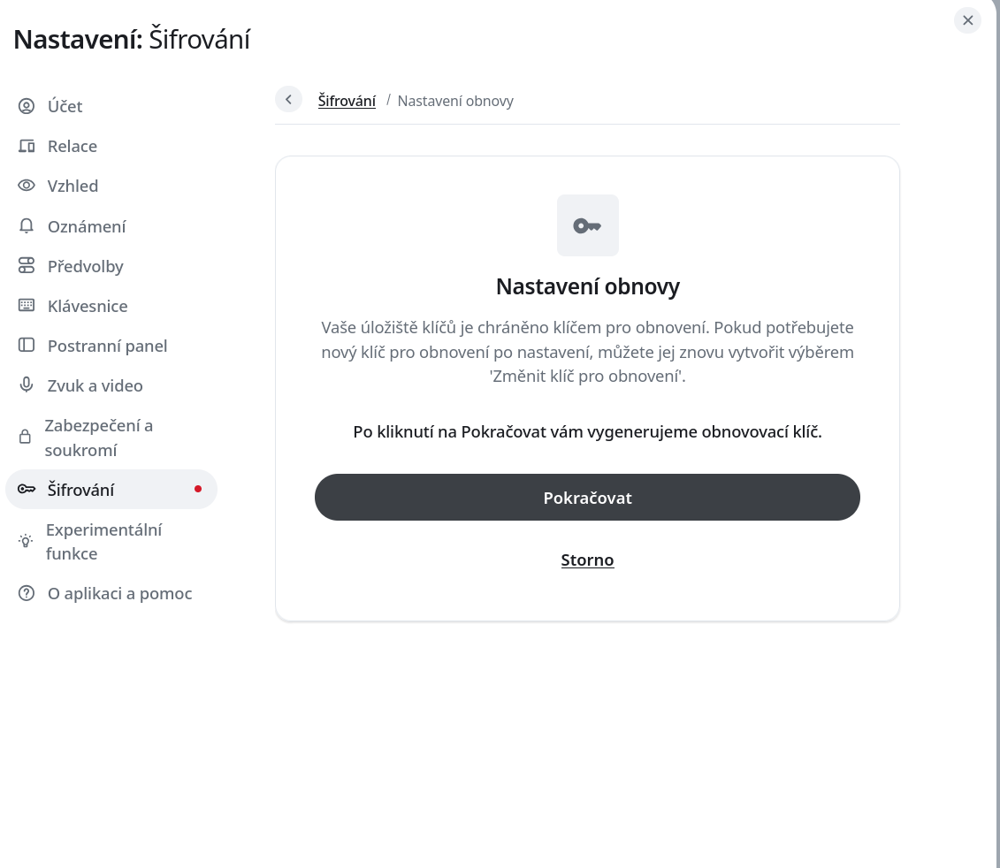
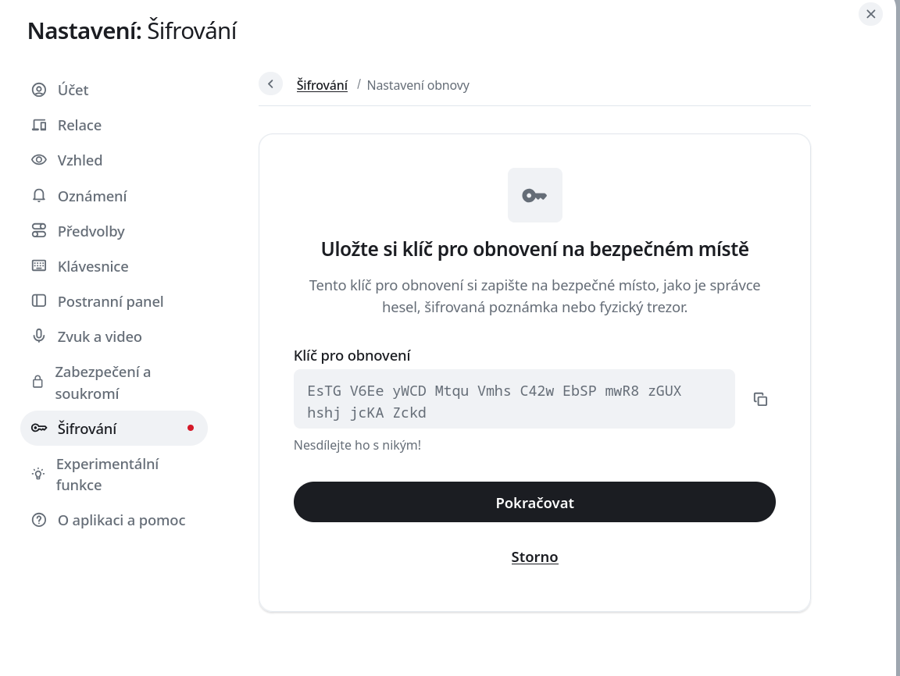

Tento návod vás provede registrací nového účtu na mxchat.cz, prvním přihlášením do Element webu a nastavením šifrování (zálohy klíčů). Trvá zhruba 5-10 minut.
Než začnete
Pro registraci budete potřebovat:
- Registrační token — vyžádejte si ho na podpora@oscloud.cz nebo přes naši kontaktní stránku. Bez tokenu se nemůžete zaregistrovat.
- E-mail — pro reset hesla a notifikace (volitelný, ale doporučený).
- Bezpečné místo pro uložení obnovovacího klíče (správce hesel, šifrovaná poznámka, papírek v trezoru).
Existující uživatelé OSCloud token nepotřebují — můžete se přihlásit pomocí svého OSCloud účtu (SSO).
1. Otevřete Element web
Přejděte na https://chat.mxchat.cz. Uvidíte uvítací obrazovku Element klientu:

Klikněte na Vytvořit účet.
2. Vyberte způsob přihlášení
Zobrazí se formulář pro vytvoření účtu. Domovský server je již nastaven na mxchat.cz.

Máte dvě možnosti:
- Pokračovat s Oscloud Login — pokud již máte účet v OSCloud (Nextcloud, Pixelfed atd.), můžete se přihlásit pomocí SSO bez tokenu.
- Registrace s tokenem — vyplňte uživatelské jméno a heslo a klikněte Zaregistrovat.
3. Vyplňte údaje
Pokud zvolíte registraci s tokenem, vyplňte:
- Uživatelské jméno — bude součástí vašeho Matrix ID (např.
@vase_jmeno:mxchat.cz). Použijte malá písmena, čísla a podtržítka. - Heslo — silné heslo (minimálně 8 znaků, doporučujeme správce hesel).
- Potvrďte heslo.

Klikněte na Zaregistrovat.
4. Zadejte registrační token
Element vás požádá o registrační token, který jste obdrželi e-mailem od podpory.

Vložte token a klikněte Pokračovat. Dokončíte registraci a Element vás přihlásí.
5. Po přihlášení
Po úspěšném přihlášení uvidíte úvodní obrazovku Elementu:

Klikněte na svou avatar ikonu vlevo nahoře a vyberte Zabezpečení a soukromí.
Nastavení šifrování (důležité!)
⚠️ Pozor: Mxchat.cz používá end-to-end šifrování. Pokud nemáte zálohu šifrovacích klíčů a ztratíte zařízení nebo se odhlásíte, přijdete o přístup ke staré historii zpráv. Doporučujeme proto na začátku nastavit obnovovací klíč.
6. Otevřete Zabezpečení a soukromí
V nabídce Nastavení klikněte na Zabezpečení a soukromí.

V levém menu klikněte na Šifrování.
7. Povolte úložiště klíčů
V sekci Šifrování zapněte přepínač Povolit úložiště klíčů.

V sekci Obnovení klikněte na Nastavení obnovy.
8. Vytvořte obnovovací klíč
Element zobrazí dialog pro vytvoření obnovovacího klíče.

Klikněte Pokračovat. Element vygeneruje 12 slov, která tvoří váš obnovovací klíč.
9. Uložte obnovovací klíč
Element vám zobrazí 12 slov, která jsou vaším obnovovacím klíčem:

Uložte si těchto 12 slov na bezpečné místo:
- Správce hesel (Bitwarden, KeePassXC apod.)
- Šifrovaná poznámka
- Papírek uložený v trezoru
Nesdílejte tento klíč s nikým! Slouží jen vám pro obnovení přístupu k šifrovaným zprávám.
Klikněte Pokračovat. Šifrování je nyní nastaveno.
Hotovo! 🎉
Máte vytvořený účet na mxchat.cz s nastaveným šifrováním. Co dál?
- Připojte si další zařízení — telefon, desktop. Při přidávání nového zařízení použijete obnovovací klíč nebo verifikaci.
- Najděte si místnosti — klikněte na Prozkoumat veřejné místnosti nebo se připojte do #podpora:mxchat.cz pro pomoc.
- Pošlete přímou zprávu — najděte uživatele přes + u People a zadejte jeho Matrix ID.
- Propojte si externí chaty — viz návody pro mosty (WhatsApp, Telegram, Signal a další).
Něco nefunguje?
- Napište nám e-mail: podpora@oscloud.cz
- Připojte se do #podpora:mxchat.cz a zeptejte se
- Mrkněte do FAQ